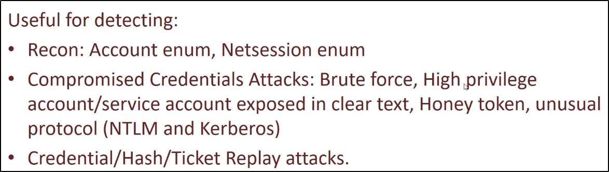

Microsoft ATA (Advanced Threat Analytics):
https://www.microsoft.com/en-us/download/details.aspx?id=56725


Risorse utili:
https://www.blackhat.com/docs/us-17/thursday/us-17-Mittal-Evading-MicrosoftATA-for-ActiveDirectory-Domination.pdf
(VEDI IN ALLEGATO IL PDF)